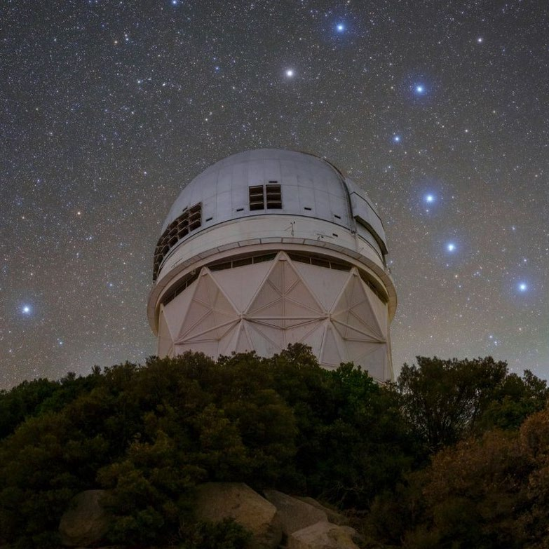

The input · from the ground
DESI Legacy Imaging Surveys
An i-band cutout supplies the measured light for reconstruction. Each 128 × 128 input is matched to the same sky region in HST.
- Observation used here
- Single-band i image
- Input cutout
- 128 × 128 pixels
Observatory photograph from the paper's instrument figure; the imaging surveys combine observations from multiple telescopes.